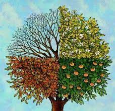

|
გაზაფხული - წელიწადის დრო რომელიც დედამიწის ჩრდილოეთ ნახევარსფეროში ზაფცულის მზებუდობის მომენტიდან 21 ან 22 ივნისი, შემოდგომის ბუნიობის მომენტამდე 23 სექტემბერი გრძელდება. ჩვეულებრივ უწოდებენ ივნისს ივლისსა და აგვისტოს |
 | |
|
ზაფხული წელიწადის ყველაზე თბილი დროა ივსება თავთავი ფრინველებსა და ცხოველებს მეტი საკვები აქვთ |
||